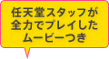

メーカー：任天堂／ジャンル：シューティング／プレイ人数：1人
©2009 Nintendo / ARIKA

『あぁ無情 刹那』は、敵を倒してハイスコアを目指すシューティングゲームです。
しばらくシューティングゲームをプレイされたことがない方は、画面を埋め尽くすほどの大量の敵の弾が自機をめがけて発射される様子を見て驚かれるかもしれません。
しかし、この敵からの攻撃こそがハイスコアの鍵を握ります。敵の攻撃を紙一重でかわしながら、特殊な攻撃で弾をスコアに変え、いかに効率的に得点を重ねていくかがこのゲームの醍醐味です。


▽スコアの基本
敵を倒したりなどしたときに出現するキューブをとると、スコアになります。
同時に出したキューブの数によってキューブのレベルがアップし、レベルに合わせて獲得するスコアも増えていきます。

連続して獲得したキューブの数が「チェーン」としてカウントされます。
このチェーンのカウントを途切れさせることなく、いかに連続してキューブを獲得するかがハイスコアを目指すうえで重要です。

『あぁ無情 刹那』ではニンテンドーWi-Fiコネクションに接続すると、全国のプレイヤーによるスコアランキングが見ることができ、ハイスコア獲得時のプレイ映像もご覧いただけます。
本当のスーパープレイはそちらの映像におまかせして、ここでは、上級者へのステップアップのために必要ないくつかのテクニックを、タイプBの機体を例にいくつかご紹介します。

プレイのコツをおさらいすると、
- ・タイプBの機体では、レーザーを出している間は、チェーンがリセットされない
- 途切れそうになったら、レーザーを出しながら、次の敵を倒すように。
- ・たくさん弾を発射する敵は、ひきつけてからレーザー
- 敵をレーザーで倒すと、その敵の発していた弾がすべてキューブに変わります。
弾の速度を遅くするジャミングを使えば、さらに通常よりもたくさんの弾を画面の中にとどめておくことができます。
- ・キューブから逃げるのは単純ですが大事なテクニック
- キューブを早く取りきってしまうと、次の敵が現れる前にチェーンが切れてしまうことがあります。
なるべくキューブから遠ざかるように機体を動かして、少しでもキューブがカウントされるタイミングを遅らすことも重要です。
これらのテクニックを応用すれば、こんなプレイが可能になります。